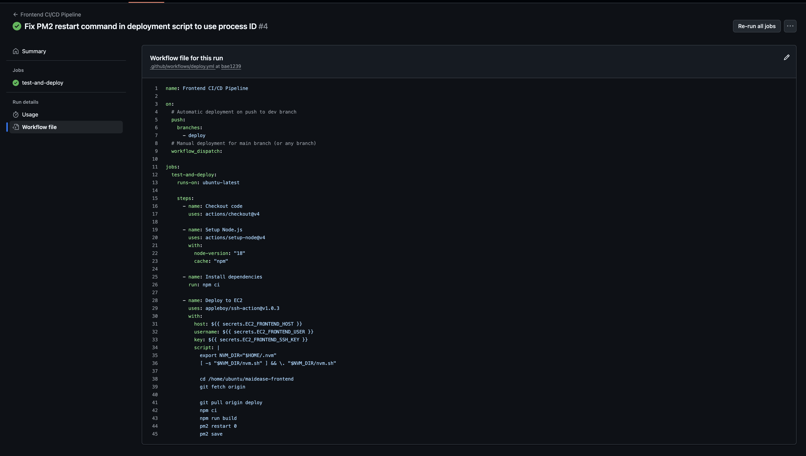
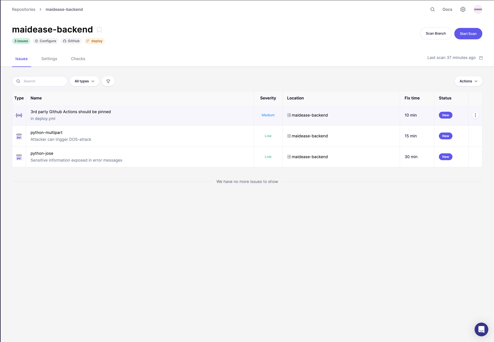
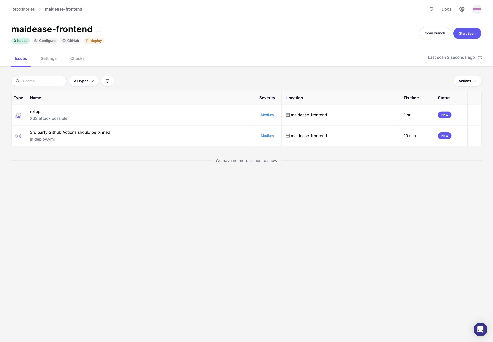

CI/CD Pipeline and Deployment Flow¶
This document outlines the CI/CD pipeline for the MaidEase application, from code commit to deployment on AWS.
1. Overview¶
The CI/CD pipeline is triggered on every push to the deploy branch of the frontend and backend repositories. The pipeline is managed using CI/CD flow from GitHub Actions.
Deployment Flow¶
The following diagram illustrates the complete deployment and operational flow of the MaidEase application, from development to user interaction.

1. Pipeline Triggers¶
Branches¶
deploy
Main deployment branch. Whenever I push to this branch, the CI/CD pipeline runs and deploys to the respective EC2 instance (frontend or backend).
GitHub Actions Workflows¶
Each repo has its own workflow file:
GitHub Actions Workflow (.github/workflows/deploy.yml)
Backend - Deploy: automatically deployed to the deploy EC2 instance.
.github/workflows/deploy-backend.yml

Frontend
- Deploy: automatically deployed to the deploy EC2 instance.
.github/workflows/deploy-frontend.yml

Deployment Steps:¶
- Frontend Deployment: The CI/CD pipeline, triggered by a push to the frontend repository's
deploybranch, automatically deploys the frontend application to an Amazon Backend EC2 instance. - Backend Deployment: Similarly, a push to the backend repository's
deploybranch triggers the pipeline to deploy the backend application to another Amazon Backend EC2 instance.
2. Security Scanning (SAST & DAST)¶
Tool: Aikido Domain Scan(for both SAST & DAST)
Backend SAST Summary¶
Total Issues Found: 3
| Issue | Severity | What It Means |
|---|---|---|
| Unpinned GitHub Actions | Medium | The deploy workflow is not locked to a version, which can allow unwanted changes from third party actions. |
| python-multipart | Low | The multipart parser can be misused to create heavy requests that slow down the server. |
| python-jose | Low | Error messages can leak internal details if not handled carefully. |
These checks help keep the API, auth system and CI process safe.

Frontend SAST Summary¶
Total Issues Found: 2
| Issue | Severity | What It Means |
|---|---|---|
| Rollup XSS risk | Medium | The build process can allow unsafe input to reach the UI, which may create XSS problems. |
| 3rd party Github Actions should be pinned | Medium | The workflow uses unpinned versions, which can introduce supply chain risks. |
These scans protect the user interface and the build process from security issues.

Security Scanning (DAST)¶
Frontend DAST Summary¶
Target area: currently scanning the login page at the production URL.
Total Issues Found: 2
| Issue | Severity | What It Means |
|---|---|---|
| Content Security Policy (CSP) header not set | Critical | The application is missing a Content Security Policy, which makes it vulnerable to Cross-Site Scripting (XSS) and other injection attacks. |
| Missing Anti-clickjacking header | Medium | The lack of an X-Frame-Options header makes the application vulnerable to clickjacking attacks. |
These scans protect the user interface and the build process from security issues.